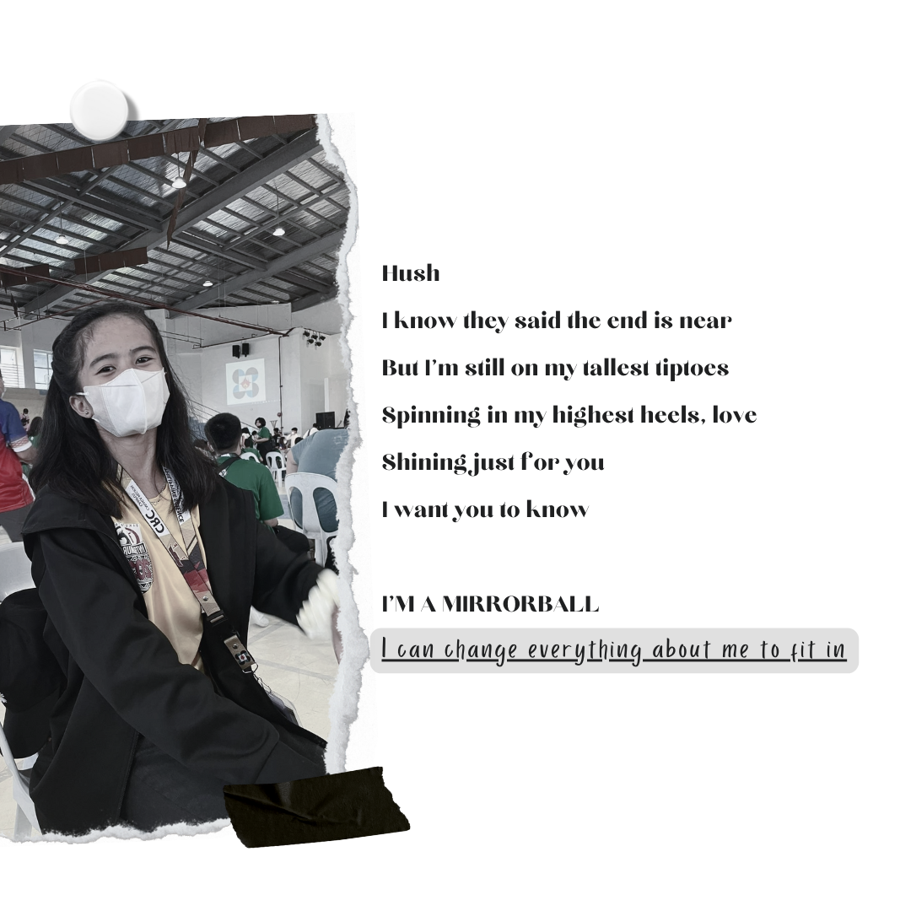

ＦＯＬＫＬＯＲＥ
- "Folklore" was released at the COVID peak in 2020 and is Taylor's eighth studio album. Most of the songs were written during quarantine.
- "Folklore" is Taylor Swift's first indie folk album. She slayed, she devoured, and she proved herself in the music industry.
- "Folklore" has a trilogy about teenage love with the songs "August," "Cardigan," and "Betty."
- "Folklore" was a surprise release, and Taylor kept it a secret from her fans that she was releasing a new album.
- - - - - -
𝓜𝓲𝓻𝓻𝓸𝓻𝓫𝓪𝓵𝓵 ( 𝓉𝒶𝓎𝓁𝑜𝓇'𝓈 𝓈𝓌𝒾𝒻𝓉 𝓋𝑒𝓇𝓈𝒾𝑜𝓃 )
I want you to know I'm a mirrorball
𝐼 𝒸𝒶𝓃 𝒸𝒽𝒶𝓃𝑔𝑒 𝑒𝓋𝑒𝓇𝓎𝓉𝒽𝒾𝓃𝑔 𝒶𝒷𝑜𝓊𝓉 𝓂𝑒 𝓉𝑜 𝒻𝒾𝓉 𝒾𝓃

click on the image to see the music lyric video!